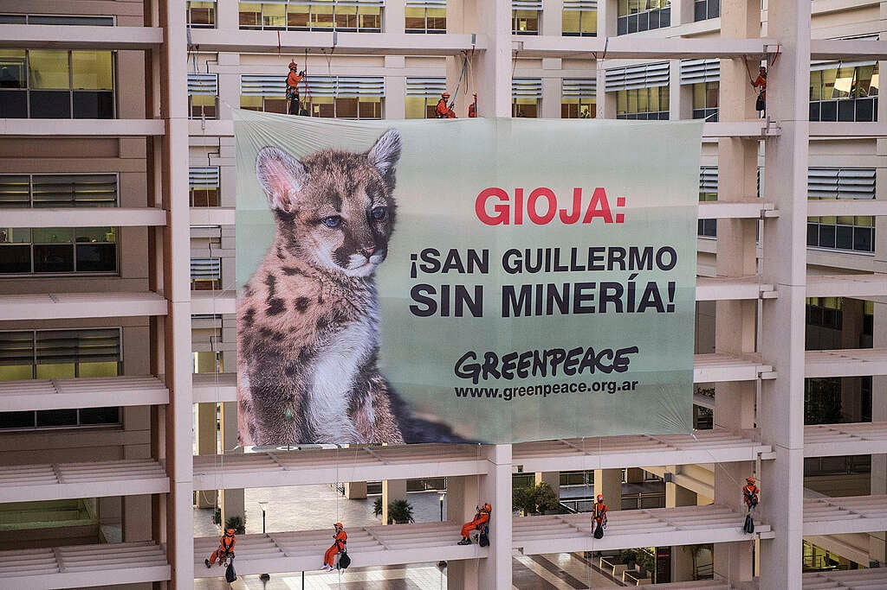
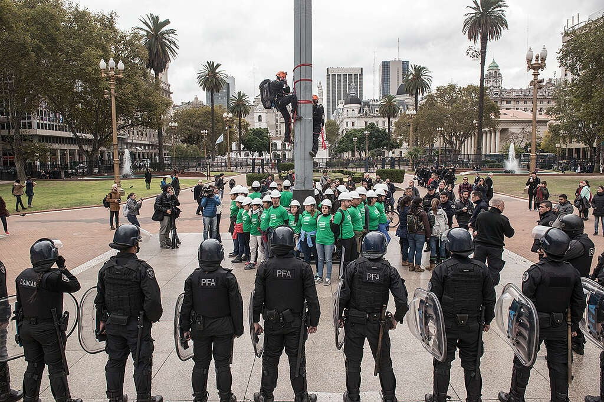
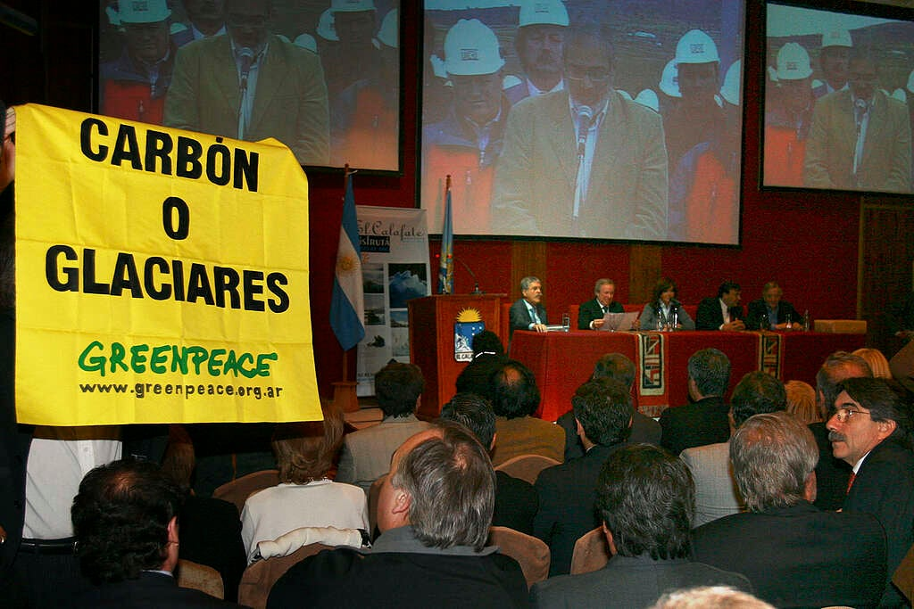

Independencia
No violencia
Confrontación política



Somos una organización sin fines de lucro, independiente, que no acepta donaciones de gobiernos, empresas o partidos políticos.
El trabajo que realizamos es totalmente financiado por más de 3 millones de socios en todo el mundo.
Nuestra independencia económica garantiza transparencia y libertad de expresión.
Además, permite asumir riesgos y hacer frente a los objetivos comprometiéndonos exclusivamente con los individuos y la sociedad civil.
La no violencia es un requisito esencial en todas las actividades que promovemos.
Es visible en cada una de nuestras acciones y testimonios, sin importar si a quienes nos dirigimos son gobernantes, empresas o instituciones.
A través de acciones directas no violentas llamamos la atención pública hacia los problemas del medio ambiente.
De esta manera, demostramos que la no violencia es una alternativa de protesta eficaz.